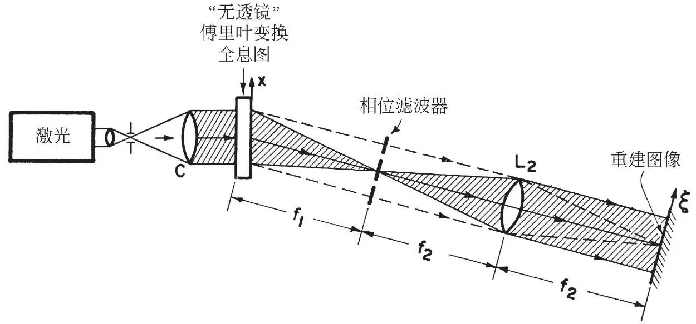
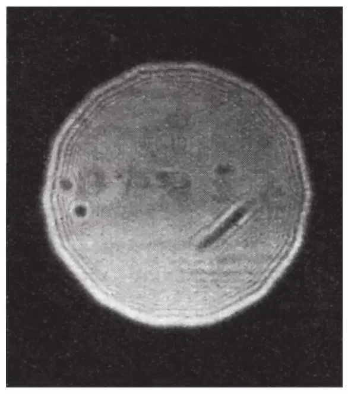
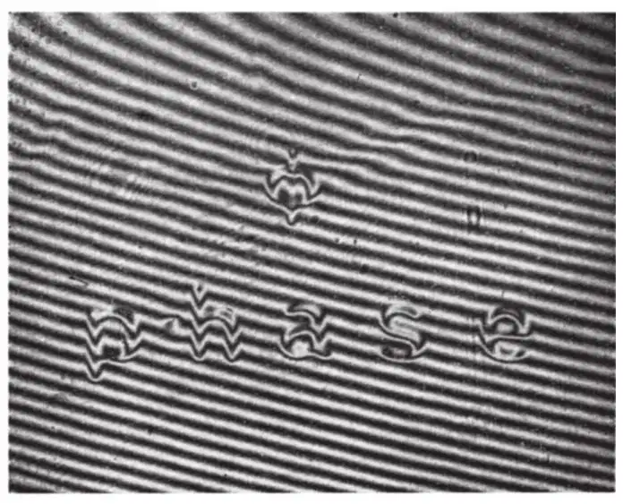
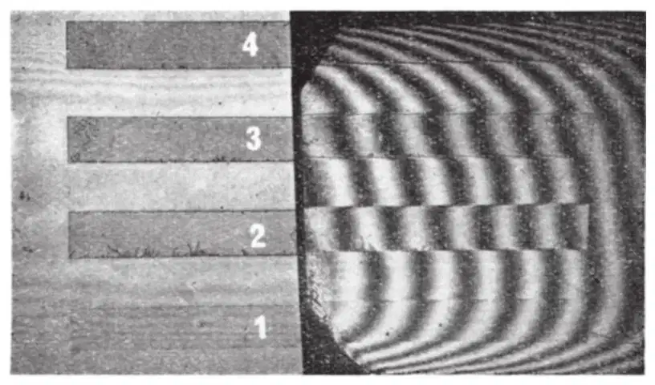
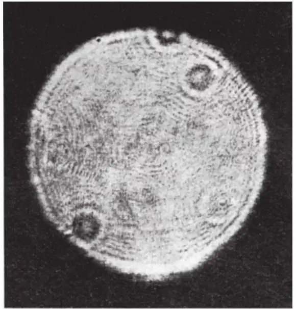
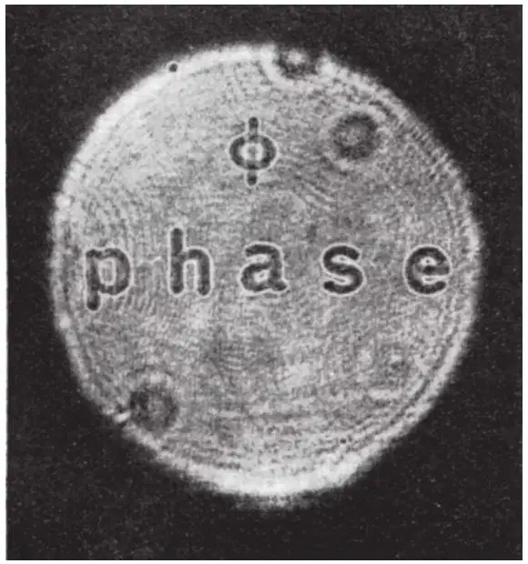
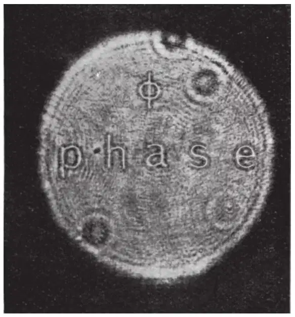
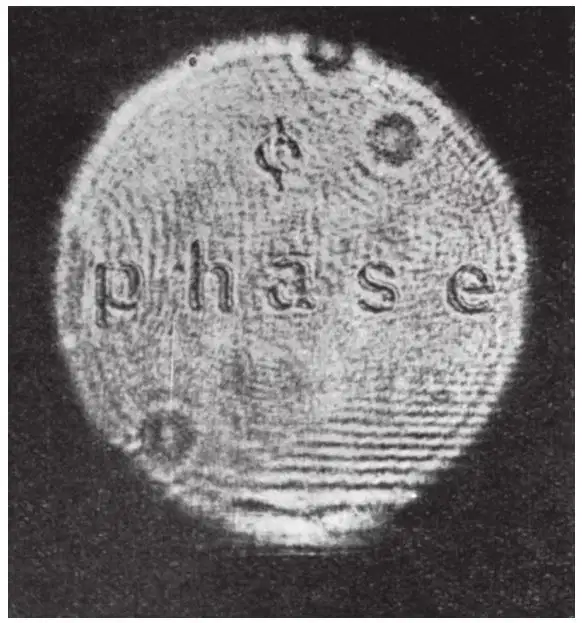
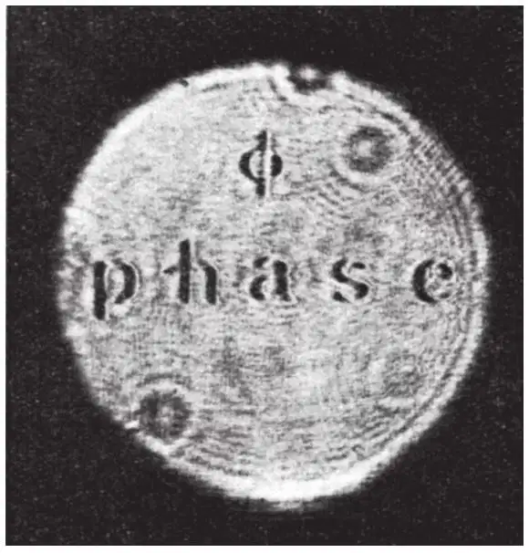
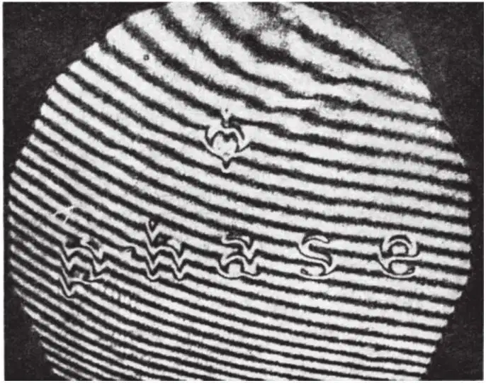

英文
英文盖伯等
编者按
匈牙利物理学家丹尼斯·盖伯于1948年在《自然》上发表了一篇关于一种三维成像过程的报道，他把这种过程称作全息术。他提出的这个想法最初与电子束光学有关，但是后来他将其推广至光学。全息术依赖于反射光线相位的相互作用，但是正如盖伯及其同事们在本文中所说，在利用照相术得到的影像中相位信息似乎会丢失，这些影像记录到的只是光束的亮度。然而他们展示了一种能够通过光学全息术同时重建光束相位和振幅的方法，并通过这种方法获得了有关散射光线的物体的全部有效信息。 英文
1948年，笔者之一首次描述了波前重建成像的原理（参考文献1~3），最近这个原理产生了惊人的进展，在宏观和微观物体的三维“无透镜”照相术和成像中尤其明显[3-8]。通过对基本方法做许多改进，人们已经获得了极好的图像，当所用的物体不是“相位”物体而是“半色调”强度物体或透明物体时，效果更为显著。 英文
在许多全息的应用中，尤其是在显微术以及其他几种应用中，“相位”物体可能是首选，其中所研究物理现象的主要特征可能是光场的相位变化，而非振幅变化，例如在风道的研究和声学的应用中。 英文
由于全息图是用照相感光乳胶记录的，且该乳胶记录的只是强度，而非相位，因此人们或许很容易相信全息图并不是一个实物的完全替代。实际上，由重建得到的全息图产生的总的波前并不等同于由物体发射的原始的波前，因为有一半的信息丢失了。为了获得全部信息，我们需要两个彼此之间是正弦–余弦关系的全息图。这样两个“互补的”或“正交的”全息图已被笔者之一[9]用于“完全重建显微术”中。把这样的两个全息图产生的波前相加，我们就得到了重建过程中的原波前，除此以外仅有均匀的背景。 英文
然而，有些自相矛盾的是，原始的波前也包含在修正波前中（修正波前是单个全息图在重建中通过衍射得到的）。实际上这种不完整性本身表明，波前中混合了一个似乎由“共轭物体”产生的附加波。但是这两个部分波前可用多种方法分离，其中最简单的方法是在记录全息图的过程中，使用与感光板呈一定角度的偏斜参考光束。一个不完整的记录包含并可以恢复得到完整的信息，这种信息–理论的矛盾可用精确度损失了一半的事实来解释。然而，在目前所有全息图的应用中这一点几乎没有引起人们的注意。 英文
因此，既然在重建过程中通过全息图衍射得到的两个（或多个）波中，有一个包含了物体中振幅和相位分布的信息，那么相位和振幅的信息或许都可从重建的波前中提取出，例如，在感光胶片上记录下最终图像之前，对存在于空中的重建图像或衍射图样进行适当的“滤波”。本质上，从全息图重建形成的图像，其波前与从一个直接对准物体的理想透镜或镜子得到的波前几乎完全相同，在这种情况下像是通过通常的“一步”成像形成的，例如显微镜中的成像。因此，不久之前我们已经清楚，我们可以在“相位”物体的全息重建图像中显示相位，必要时，可从人们熟知的方法[10,11]（例如相衬法、干涉测量法、傅科法或纹影法）中任意选取一种以振幅变化的形式来呈现相位变化，就像在显微术中和光学中其他相位测量应用中所使用的方法一样。 英文
由于目前人们对全息术有很大的兴趣，并且我们最新取得的一些进展似乎表明在波长很短（例如X射线）的情况下可使显微镜得到非常高的分辨率，因此似乎有必要给出以下说明：利用全息术，使用单个全息图或许就可轻易实现保持相位的成像过程及“相衬”图像重建。 英文
我们使用图1所示的装置，作为一个相位物体图像的“相位保持”重建的例子。所用的相位物体如图2a所示（勉强可见），图2b显示的是物体放大的透射型双光束干涉图。将单词“phase”和字母“φ”拍摄在一张柯达649F干板上，并漂白感光乳胶（使用柯达铬增强剂作为漂白剂）从而制得了相位物体。众所周知，感光乳胶将随着曝光强度的增加而收缩。（图2c为在曝光因子为1、2、3、4时，典型的感光乳胶的收缩。）为了避免字母边缘斜度过大，相位物体是通过将像投影在故意稍稍偏离焦点的胶片上来记录的。（图2b中所示的收缩量是用75瓦的灯泡在f/11和在20秒的曝光下以1∶1在放大机内成像并作适当漂白而获得的。） 英文

图1．改进型的傅里叶变换全息像重建装置，可以进行相位物体的“相衬”检测和相位物体的成像。在傅里叶变换全息图的“无透镜”记录中，距离f1分别等于物体和点参考光源到全息图间的距离[12,13]。从傅里叶变换全息图得到的像的“传统的”傅里叶变换重建是在无“相位滤波器”的情况下得到的。（在傅里叶变换全息成像过程中获得的几何放大倍率等于f2/f1。当重建波长λ2超过记录波长λ1时，得到的附加放大倍数因子等于λ2/λ1。在本文中，f1 = 415毫米，f2= 600毫米，λ2 =λ1 = 6,328埃。） 英文

图2a. 在本研究工作中使用的相位物体的直接（不是全息的）图像，这是用柯达649F感光乳胶（见正文和图2b）进行适当漂白得到的“纯”相位物体的程度。该物体是单词“phase”和字母“φ”（单词“phase”长20毫米）。可以检测到的微弱衬度是由于轻微的散焦以及干板上一些剩余吸收而产生的。 英文

图2b. 本研究工作中所使用的相位物体的双光束单通干涉图（6,328埃）。这个相位物体的全息图是用参考文献12中记录的“无透镜”傅里叶变换全息图记录装置进行记录的。 英文

图2c. 双光束单通干涉图（6,328埃），它显示了感光乳胶的收缩程度以及在4种不同曝光量下（比例为×1、×2、×3、×4）用柯达649F感光乳胶得到的相应的相位变化，并用柯达铬像增强剂作了适当的漂白，以获得残余吸收量最小的近乎纯的“相位物体”。 英文
相位物体的全息图是用“无透镜傅里叶变换”全息图记录装置记录的，笔者之一[12,13]首次对这种装置进行了描述，其中，令各个物点发出的球面波与一个“单个”球面参考波相干，而这个参考波来自与物体相邻的平均平面中的“点”源。记录中所用的参考波的半径f1 = 415毫米。（我们可以注意到，在物体与感光乳胶之间不引入任何其他光学元件的情况下，全息图的“无透镜”记录可以对物体的相位分布信息进行存储，这避免了任何程度上的外来散射，而这种散射可能会降低所用方法的保真度和灵敏度。） 英文
图3、图4和图5是通过“无透镜傅里叶变换”全息图得到的重建图像。图3是一个傅里叶变换重建图像，其未经滤波，仅是用单色平面波（6,328埃）透过全息图，并在一个f2=600毫米的透镜的焦平面上记录一个边带像而得。与强度或振幅的重建图像不同，图3中相位物体的重建图像并没有表现出振幅衬度，这是由于物体具有“纯”相位性质。 英文

图3．用图1装置中的傅里叶变换重建得到的重建图像，没有做任何相衬增强处理。（根据参考文献12得到了物体的“无透镜”傅里叶变换全息图的记录。）这个像的特征是，在像的相位部分几乎没有任何振幅衬度。（各种各样的干涉效应都是干扰性的，这主要是由于重建光学元件不够干净而造成的。）可以注意到，当原物体是振幅或强度物体[12,13]而不是纯相位物体时，在相似条件下可以获得极好的像。 英文

图4a. 通过散焦增强“相衬”得到的相位物体的重建图像（与图1中透镜L2的距离变化为–f2/4，其中f2= 600毫米）。物体中单词的长度是20毫米（由于放大倍数为f2/f1，因此像中长度是30毫米（见图1））。 英文

图4b. 利用散焦增强“相衬”得到的相位物体的重建图像（此时散焦，与透镜L2距离变化为+f1/4）。 英文

图4c. 在图1的装置中使用相衬滤波器（图2c中所示的其中一个矩形相位条的角）增强相衬而得到的相位物体的重建图像（这里的干涉效应是干扰性的，这是由重建光学器件不够干净造成的）。 英文

图4d. 在图1的相位滤波板中使用一个傅科刀口边沿增强相衬而得到的相位物体的重建图像。 英文

图5．“全息图的全息图”。重建的空间像与平面参考光之间的干涉图样的双光束单通干涉图（激光波长为6,328埃）。将这里所示的像干涉图与通过相似方法得到的图2b中的物体干涉图进行比较，可以证明物体中的相位分布确实得到了保存，并在傅里叶变换波前重建中完全实现了重建。其中使用的是改进型的“相衬”增强装置，如图1所示。（我们可以注意到，相位保存和相位增强重建用作全息图记录时使用的是一个波长，而用于全息图重建时使用的是第二个波长。例如，当λ1属于X射线波段时，λ2属于可见光激光波段。） 英文
图4和图5是用人们熟知的相位滤波或相衬法得到的一些衬度很好的相位物体的像，其中相位变化是通过图像中的振幅（即强度）变化来体现的。 英文
图4a和图4b是通过“散焦”相衬增强得到的重建图像，使用的傅里叶变换重建装置与经过严格对焦的图3所用的装置相同，但是相对于图3的准确对焦像，这里都是略微（f/24处±1/4f2）偏离焦点对像进行记录的。 英文
图4c是一个准确对焦的像，用图1所示的滤波装置中借助相衬滤波器的角来增强相衬（同样用照片做了记录，并进行了漂白，类似于前文描述的对物体所做的记录）。 英文
图4d是在图1所示的滤波装置中借助傅科刀口滤波器（与单词“phase”垂直）增强“相衬”得到的一个准确对焦的像。 英文
图5是一幅重建空间像的双光束干涉图，它由空间像与一个平面波（通过适当的光束分束装置）的干涉所形成：通过比较相位物体的干涉图（图2b），可以很容易地对相位保持的程度和“相位保持”重建的保真度进行评估。 英文
将图4和图5的像和像的干涉图与图2的相位物体和物体–干涉图对比，可以清晰地看出，记录在全息图内相位物体的相位分布不仅可以获取，而且相位物体中像的相位也能容易地借助于相衬法或其他图像–滤波方法，包括各种类型的干涉测量方法，以重建图像的振幅（各自强度）来表示。我们可能会注意到一些迹象，就是以1/1的参考/衍射场强比（而不是本文中所用的大约5/1的场强比）记录的相位物体的全息图，似乎可简单地在“传统的”傅里叶变换重建装置的焦点处表现出某些明显的“相衬”增强。 英文
我们感谢雷斯特里克提出的建议。本项研究工作部分由美国国家科学基金会及美国海军研究办公室支持。 英文
（沈乃澂 翻译；熊秉衡 审稿）